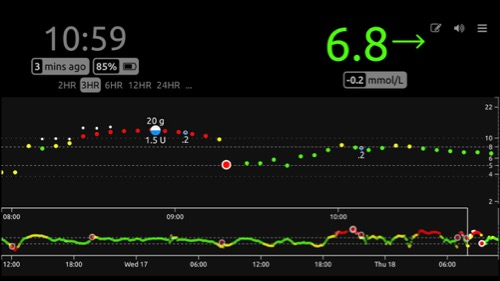

Welcome to Nightscout⌁
Introduction⌁
Nightscout (CGM in the Cloud) is an open source, DIY project cloud application, which you can install yourself using free hosting from various cloud service providers. Once installed, Nightscout acts as a central repository of blood glucose and insulin dosing data for a single person, allowing you to view the CGM graph and other data anywhere using a web browser.
The CGM data is sent to Nightscout using an uploader application such as xDrip+ or Spike, running on a mobile phone carried by the person being monitored. The application you'll need for uploading the data depends on which CGM device you're using.
In addition to viewing the data using a web browser, there are several applications available for mobile devices and smart watches, which allow you alternate ways to view the information.
Once you have Nightscout up and running, you'll get a view that looks something like this:

Important
Please understand that this project:
- Is highly experimental
- Is not approved for therapy
You take full responsibility for building and running this system and do so at your own risk.
Looking to install Nightscout?⌁
Start with the Overview.
Looking to update to latest reelease?⌁
Go to the Update instructions.
Development History⌁
Nightscout has been developed as an open-source, shared project.
How to Use These Docs⌁
- Use the navigation menu at the top of the screen to find the info you are looking for.
- A Table of Contents for the current page is always displayed on the left side of the screen.
- You can search the Nightscout Docs site by clicking the icon.